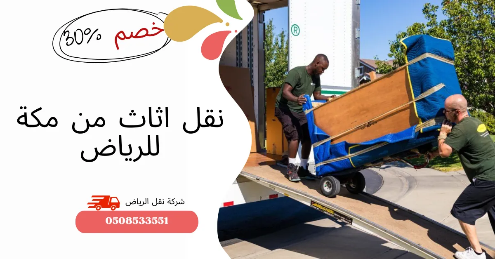

نقل اثاث من مكة للرياض

عند التفكير في الذهاب إلى منزل جديد فأنك ستكون بحاجة إلى خدمة نقل الأثاث، حيث تعد هذه الخدمة من المهام الكبيرة التي تتطلب اهتمامًا خاصًا لضمان وصول الأثاث إلى وجهته بأمان ودون أي تلف، ولأن تتعدد شركات النقل التي توفر خدمات نقل الأثاث بين المدينتين، جاءت شركة نقل الرياض كشركة نقل اثاث من مكة للرياض في المرتبة الأولى بجميع انحاء المملكة، لذلك من المهم اختيار الشركة التي تقدم خدمة احترافية وبأسعار معقولة فهي ارخص شركة نقل عفش بالرياض، حيث تقدم شركات النقل المتخصصة حلولًا شاملة تتضمن التغليف، والفك والتركيب، والنقل، مع ضمان الحماية الكاملة للأثاث طوال عملية النقل.
نقل اثاث من مكة للرياض
يحتاج نقل اثاث من مكة للرياض اهتمامًا خاصًا من حيث التخطيط والتنظيم، وهذا لضمان انتقال الأثاث بشكل آمن وبدون أي
أضرار، كما يجب على الشركات المختصة في هذا المجال أن توفر خدمات شاملة تشمل التعبئة والتغليف بأعلى معايير الجودة،
لضمان حماية الأثاث أثناء التنقل لمسافات طويلة، كما يعد اختيار الشركة المناسبة أمرًاكهم جدًا، حيث توفر بعض
الشركات فرقًا متخصصة لتنفيذ المهمة بكفاءة ودقة، مع استخدام المعدات المناسبة.
كما تقدم شركات النقل المتخصصة خدمات فك وتركيب الأثاث بعد الوصول إلى الوجهة الجديدة، مما يسهل على العملاء تجنب أي
مشكلات متعلقة بتركيب قطع الأثاث بالإضافة إلى ذلك، تعتبر بعض الشركات خدمتها مرنة وتقدم خيارات بأسعار تنافسية مثل
خدمات شركة نقل الرياض، مما يجعلها الخيار المثالي للأشخاص الذين يرغبون في
نقل الأثاث من مكة إلى الرياض بسهولة وراحة، مع الاهتمام الكامل بجودة النقل وضمان وصول الأثاث بأمان، فإن عملية نقل
الأثاث ستكون خالية من المتاعب.
ارخص شركة نقل عفش بمكة
إذا كنت تبحث عن أرخص شركة نقل اثاث من مكة للرياض، فإن شركة نقل الرياض تعد من الخيارات المثالية، فـ هي توفر كافة خدمات نقل العفش عالية الجودة بأسعار تنافسية، مما يجعلها الخيار الأفضل للأشخاص الذين يرغبون في توفير المال دون التنازل عن مستوى الخدمة، كما تقدم شركة نقل الرياض خدمة نقل الأثاث بكل احترافية، بدءًا من التعبئة والتغليف باستخدام مواد آمنة وموثوقة، وصولًا إلى النقل بعناية لضمان وصول الأثاث بحالة ممتازة، كما تتميز الشركة بتوفير خدمات فك وتركيب الأثاث، مما يوفر للعملاء راحة البال ويسهل عملية الانتقال، لذلك سنتعرض عليك أهم مميزات شركتنا.
أسعار تنافسية
تقدم الشركة خدمات نقل عفش بأسعار معقولة تتناسب مع ميزانيات مختلفة، مما يجعلها الخيار الأمثل للعملاء الذين يبحثون عن خدمات ممتازة بتكلفة أقل.
خدمات تغليف عالية الجودة
تستخدم الشركة أفضل مواد تغليف آمنة ومتينة لحماية الأثاث من أي تلف أثناء النقل، مما يضمن وصوله بحالة ممتازة.
فك وتركيب الأثاث
تقدم الشركة خدمة فك وتركيب الأثاث بشكل احترافي وسريع، مما يسهل عملية الانتقال ويساعد على تنظيم المكان الجديد.
احترافية في العمل
يمتلك فريق العمل المهارات والخبرة اللازمة لضمان نقل الأثاث بكل دقة وعناية، مع الحفاظ على سلامة الأغراض.
التوصيل في الوقت المحدد
تلتزم شركة نقل الرياض بمواعيد النقل وتضمن الوصول في الوقت المحدد.
افضل شركة نقل عفش بمكة
عند البحث عن افضل شركات نقل الاثاث في السعودية، تأتي شركة نقل الرياض في المرتبة الأولى كأفضل خيار للعملاء الذين يتطلعون إلى خدمات موثوقة ومهنية، لأن الشركة تتميز بتقديم حلول شاملة ومتنوعة لنقل الأثاث، بدءًا من التعبئة والتغليف وصولاً إلى فك وتركيب الأثاث في المنزل الجديد، كما تستخدم شركة نقل الرياض أحدث التقنيات والمواد لضمان حماية الأثاث أثناء النقل، مع فريق من المتخصصين المدربين على أعلى مستوى بالإضافة إلى ذلك، توفر الشركة أسعارًا تنافسية وخصومات قد تصل إلى 50% وخدمات عالية الجودة، مما يجعلها الخيار المثالي للسكان في مكة المكرمة سواء كان النقل لمسافات قصيرة أو طويلة، فإن شركة نقل الرياض تضمن لك راحة البال وأثاثك في أمان.
نقل عفش شمال الرياض
يتطلب نقل الأثاث في شمال الرياض تخطيطًا دقيقًا لضمان الوصول إلى الوجهة دون أضرار للأثاث، فيما يلي بعض الخطوات الأساسية لضمان نقل الأثاث بشكل آمن:
التخطيط المسبق
قبل البدء في النقل، يجب تحديد جميع الأثاث المراد نقله وتحديد الأماكن التي سيتم نقلها إليها، حيث تساعد هذه الخطوة في تقدير الوقت والموارد المطلوبة.
التغليف الجيد
استخدم مواد تغليف عالية الجودة مثل الفلين، الورق المقوى، والفوط لحماية الأثاث من الخدوش أو التلف أثناء النقل، خاصة الأثاث القيم مثل الزجاج والخشب، يحتاج إلى تغليف محكم.
تفكيك الأثاث الكبير
من الضروري فك قطع الأثاث الكبيرة مثل الأسرة والخزائن لتسهيل عملية النقل وتقليل فرص حدوث الأضرار، والتأكد من الاحتفاظ بكل القطع والمسامير في مكان آمن.
استخدام النقل المجهز
تعتمد على سيارات نصف نقل لنقل العفش ومناسبة لنقل الأثاث مثل الشاحنات المغلقة لتوفير الحماية من العوامل الجوية.
التعاقد مع شركة متخصصة
يعد توظيف شركة نقل محترفة في شمال الرياض من أفضل الحلول لضمان السلامة والكفاءة في النقل، الشركات المتخصصة تمتلك فرقًا مدربة على التعامل مع كافة أنواع الأثاث.
باتباع هذه الخطوات، يمكن نقل الأثاث من شمال الرياض إلى أي منطقة أخرى بسهولة وأمان.
نقل عفش من مكة الى جدة
عند القيام في نقل الأثاث من مكة إلى جدة يجب عليك التنسيق الجيد لضمان نقل آمن وفعال، بالشكل التالي أولاً من المهم تحديد الأثاث الذي سيتم نقله وفصل القطع القابلة للكسر أو التي تحتاج إلى حماية خاصة مثل الزجاج أو التحف بعد ذلك، يجب استخدام مواد تغليف مناسبة مثل الورق المقوى، والفقاعات الهوائية، والفوط لتوفير حماية مثالية أثناء النقل، كما يفضل الاستعانة بشركة نقل محترفة حيث توفر هذه الشركات شاحنات مجهزة بشكل خاص لنقل الأثاث، بالإضافة إلى فرق عمل مدربة على التعامل مع جميع أنواع الأثاث بكفاءة، بالإضافة إلى أنه تفكيك قطع الأثاث الكبيرة يسهل عملية النقل ويقلل من خطر حدوث أي أضرار بعد الوصول، يقوم الفريق بإعادة تجميع الأثاث وترتيب المكان بأفضل طريقة.
الأسئلة الشائعة حول نقل اثاث من مكة للرياض
هل توفر شركات نقل الأثاث خدمات الفك والتركيب؟
نعم، توفر معظم شركات نقل الأثاث خدمات فك وتركيب الأثاث كجزء من خدمات النقل، حيث يمكن الترتيب مسبقًا مع الشركة للحصول على هذه الخدمة لضمان تسليم الأثاث بحالة جيدة وتجنب أي تلف.
كيف يمكنني ضمان سلامة الأثاث أثناء النقل؟
لضمان سلامة الأثاث، تأكد من أن الشركة تستخدم مواد تغليف مناسبة مثل الورق المقوى، الفقاعات الهوائية، والأغطية الواقية بالإضافة إلى ذلك، يجب أن يتم نقل الأثاث باستخدام مركبات مخصصة ومزودة بأنظمة حماية لضمان وصوله بأمان.
ما هي الخدمات التي تقدمها شركة نقل الرياض؟
تقدم شركة نقل الرياض العديد من الخدمات المميزة والتي تلبي جميع احتياجات عملائها الكرام، حيث لا تنحصر خدماتنا في نقل العفش فقط، بل نحن نقدم كافة الخدمات المنزلية التي يحتاج لها كل فرد من أفراد البيت والتي تتمثل في، خدمات التنظيف بأنواعها، فك وتركيب كافة أنواع الأثاث، تنظيف المكيفات وتركيبها، نقل وتخزين العفش، بالإضافة إلى الخدمات التي نقدمها التي تصل إلى 30%، لا تترد في التواصل معنا الآن فنحن في خدمتك على مدار 24 ساعة.
باختيار أفضل شركة نقل اثاث من مكة للرياض، يمكنك التأكد من أن الأثاث سيصل بأمان وفي الوقت المحدد، تقدم هذه الشركات خدمات متكاملة تشمل العناية الكاملة بالأثاث بدءًا من التعبئة والتغليف، وصولًا إلى فك وتركيب القطع عند الوصول لذلك، ينصح بالبحث عن الشركات ذات السمعة الطيبة والتي تضمن لك تقديم الخدمة بأسعار تنافسية وجودة عالية، تأكد من أن تختار الشركة التي تلتزم بمعايير السلامة والاحترافية لتجنب أي مشاكل أثناء عملية النقل.